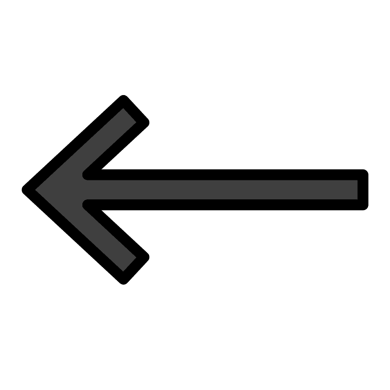

Про Заліщики

Це туристичне місце, яке славиться визначними історико-архітектурними пам`ятками та приголомшливою природою. Тут розташований Дністровський каньйон – один із найбільших в Європі. Завдяки ньому місто схоже на острів.
Вважають, що назва міста походить від місця проживання перших поселенців — «за ліщиною», хоча правдивішою виглядає версія, що назва утворилась від первісної назви поселення — Залісся, що пізніше стало Залісще, і вже кінцевий варіант — Заліщики.
- «Чому варто відвідати Заліщики?»
- 1. 🌊 Побачити Дністер
- 2. 🏞️ Помилуватися Дністровським каньйоном
- 3.🏛️ Познайомитися з історією міста
- 4. 📸 Зробити неймовірні фото
- 5. 🌿 Відпочити серед природи
- 6. 🚶 Пройти туристичним маршрутом